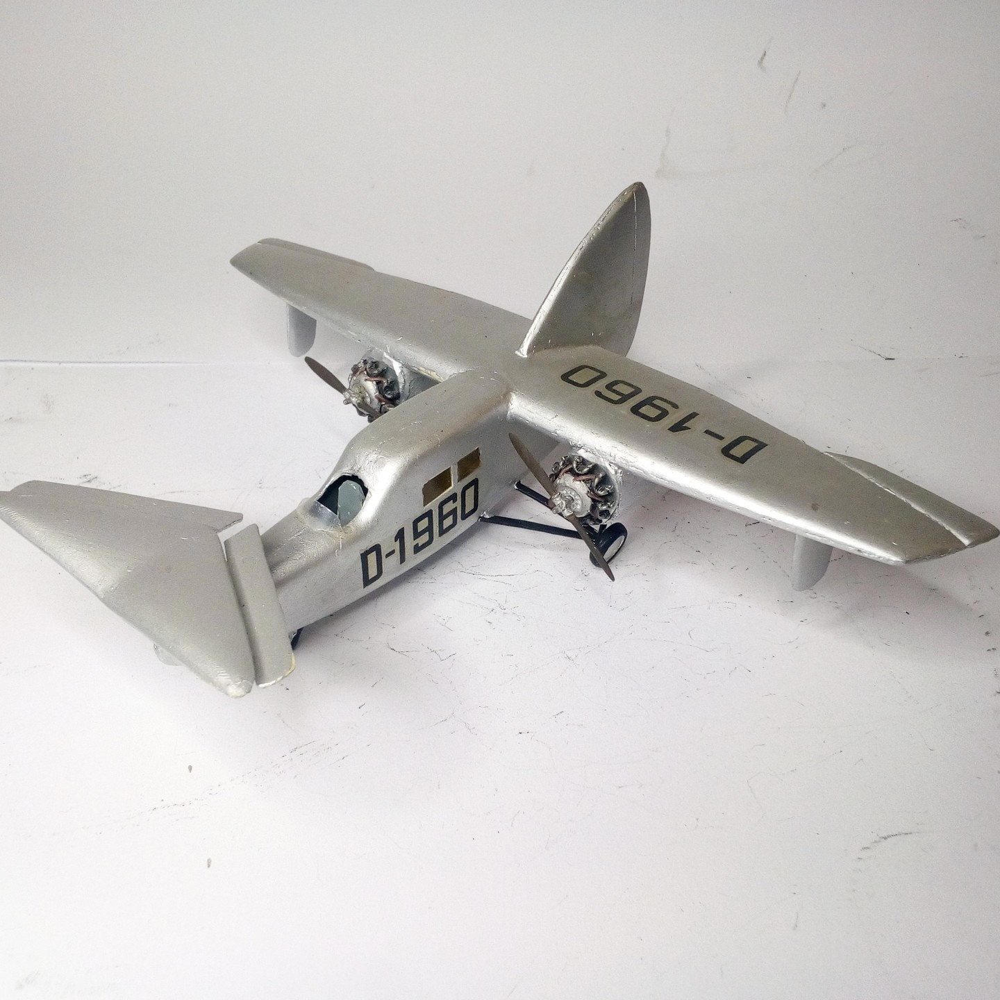
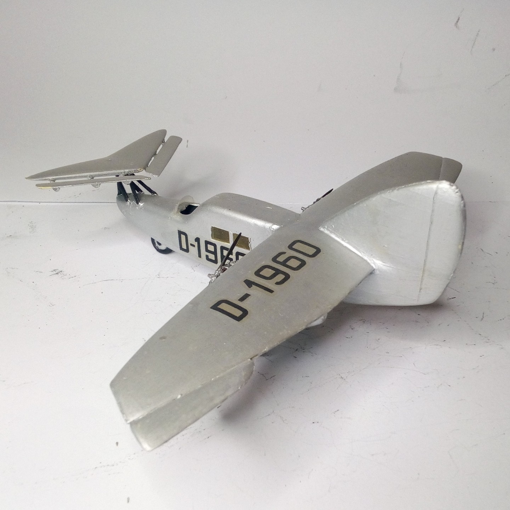

Aerei · scale model archive
Focke-Wulf F 19 Ente
Focke-Wulf F 19 Ente — Kit: Airmodel vacform, Scale: 1/72. Queer-looking contraption of a passenger plane, what? The dashed thing took to the air like a…

Photo gallery

English description
Queer-looking contraption of a passenger plane, what? The dashed thing took to the air like a leaden duck (or maybe not..)
#1/72 #Airmodel #vacform #FW19
Descrizione italiana
Strano congegno dall’aspetto bizzarro per un aereo passeggeri, eh? Quella dannata cosa si alzò in volo come un’anatra di piombo, o forse no... #1/72 #Airmodel #vacform #FW19